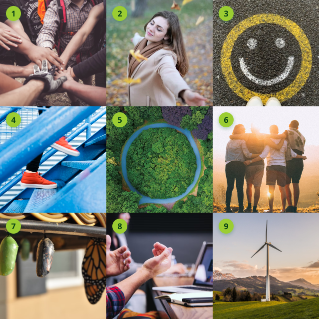

DAFO
Debilidades
- Escasos recursos de alcance de target potencial.
- Falta de personal especializado en comunicación.
- Falta de recursos financieros.
- imagen débil.
Amenazas
- Crisis económica.
- Incremento de las sequías en el centro peninsular.
- Aumento de la competencia.
- Movimientos negacionistas contra el cambio climático.
Fortalezas
- Punto de encuentro y creación de nuevos vínculos sociales con intereses afines.
- Experiencia en el sector.
- Agenda política, que promueve iniciativas que luchen contra el cambio climático.
- Sociedad solidaria y abierta
- Visibilidad del tema de la crisis climática y medioambiental en la sociedad.
- Tienen ganada la confianza de los ya afiliados.
- Aportan un bien visible y tangible a la sociedad.
- Especializados en el terreno local.
- Compromiso con la sociedad.
- Tienen una identificación con un concepto positivo.
- Crecimiento y expansión a comunidades autónomas cercanas.
Oportunidades
- Pueden colaborar en programas de desarrollo sostenible.
- Madrid es una ciudad con mucha población y en continuo crecimiento.
- Colaboraciones con otras asociaciones.
- Colaboración con empresas que busquen vender una imagen de verdes y/o ecológicos
- Crecimiento de la conciencia ecológica en la sociedad.
- A medio-largo plazo pueden generar confianza y ser un referente en el sector.
- Incremento de tendencias y estilos de vida más saludables.
- Mayor interés de la población por el mundo más natural y rural.
Drivers
Atributos

- Cooperativo
- Beneficioso
- Positivo
- Creciente, activo, vivo, jóven
- Proteccionista
- Comunidad, lazos sociales, cercano
- Perspectiva de futuro
- Edicativo, Didáctico
- Activismo social, Resolución de problemas
Narrativa
Un recorrido hacía un mundo más verde
La narrativa de la marca es trabajar un recorrido juntos hacía un mundo más verde, en simbiosis con el mundo natural, buscando impulsar un cambio y una mejora común, un cambio de rumbo, a partir de pequeñas acciones para construir un espacio común de bienestar, con impacto positivo beneficioso a diversos niveles.